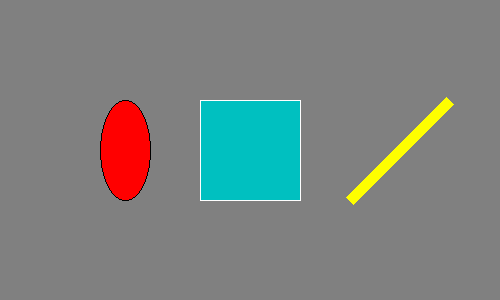
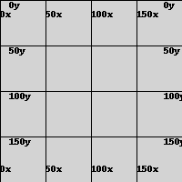
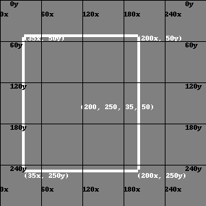
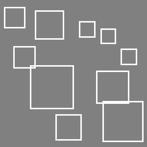

# default_exp datasets.generators_legacy
%load_ext autoreload
%autoreload 2
from nbdev import *
from typing import List, Tuple
Helpers for Dataset Generation¶
Use tmp dir¶
import tempfile
tmp_dir = tempfile.TemporaryDirectory()
tmp_dir.name
'/tmp/tmpubu7tmpa'
from pathlib import Path
f_path = Path(tmp_dir.name) / 'test.csv'
f_path
Path('/tmp/tmpubu7tmpa/test.csv')
import pandas as pd
from pandas import DataFrame
DataFrame({'a': [4], 'b': 5}).to_csv(f_path, index=False)
pd.read_csv(f_path)
| a | b | |
|---|---|---|
| 0 | 4 | 5 |
Create images¶
im = Image.new('RGB', (500, 300), (128, 128, 128))
draw = ImageDraw.Draw(im)
draw.ellipse((100, 100, 150, 200), fill=(255, 0, 0), outline=(0, 0, 0))
draw.rectangle((200, 100, 300, 200), fill=(4, 4, 200), outline=(255, 255, 255))
draw.line((350, 200, 450, 100), fill=(255, 255, 0), width=10)
im

def draw_grid(im=None, size=(100, 100), n_hlines=10, n_vlines=10, black=True):
"""
size: (width, hight)
black: bool
draw grid and numbers in black or white
"""
color = (0, 0, 0)
if not black:
color = (255, 255, 255)
if im is None:
im = Image.new('RGB', size, color=(211, 211, 211))
width, hight = im.size
draw = ImageDraw.Draw(im)
ln_width = int((max(size) * 0.03) / max(n_hlines, n_vlines))
for h in range(n_hlines):
y = hight * h * (1 / n_hlines)
draw.line((0, y, width, y), fill=color, width=ln_width)
draw.text((width * 0.05, y), text=str((int(y))) + 'y',
fill=color)
draw.text((width * 0.9, y), text=str((int(y))) + 'y', fill=color)
for h in range(n_vlines):
x = width * h * (1 / n_vlines)
draw.line((x, 0, x, hight), fill=color, width=ln_width)
draw.text((x, hight * 0.05), text=str((int(x))) + 'x', fill=color)
draw.text((x, hight * 0.9), text=str((int(x))) + 'x', fill=color)
return im
draw_grid(size=(200, 200), n_hlines=4, n_vlines=4)

img = Image.new('RGB', (300, 300), color='grey')
# draw_bbox((35, 50, 200, 250), im=img, black=False)
draw_bbox((200, 250, 35, 50), im=img, black=False, width=4)
draw_grid(img, n_hlines=5, n_vlines=5)

xyxy_to_xywh([50, 50, 150, 150])
[50, 50, 100, 100]
xywh_to_xyxy([50, 50, 100, 100])
[50, 50, 150, 150]
Overlap & Intersection over Union (IOU)¶
r1 = (10, 10, 110, 110)
r2 = (50, 50, 90, 90)
assert overlap(r1, r2) == 1
assert overlap(r2, r1) == 1
r1 = (0, 0, 100, 100)
r2 = (50, 50, 150, 150)
assert overlap(r1, r2) == 0.25
assert overlap(r2, r1) == 0.25
# export
def bb_intersection_over_union(boxA, boxB, verbose=False):
interArea, boxAArea, boxBArea, _ = bbox_intersection(boxA, boxB)
iou = interArea / float(boxAArea + boxBArea - interArea)
if verbose:
print(f"iou: {iou: .2f}, interArea: {interArea: .2f}"
f", boxAArea {boxAArea: .2f}, box1Area {boxBArea: .2f}")
return iou
r1 = (10, 10, 110, 110)
r2 = (80, 80, 180, 180)
img = Image.new('RGB', (300, 200), color='grey')
draw_bbox(r1, im=img, black=False, values=True)
draw_bbox(r2, im=img, black=False, values=True)
iou = bb_intersection_over_union(r1, r2, verbose=True)
# iou = bb_intersection_over_union(r1, r2, verbose=True)
_, _, _, union = bbox_intersection(r1, r2)
draw = ImageDraw.Draw(img)
draw.rectangle(union, fill='blue')
img
iou: 0.05, interArea: 900.00, boxAArea 10000.00, box1Area 10000.00
r1 = (10, 10, 110, 110)
r2 = (20, 20, 120, 120)
img = Image.new('RGB', (200, 150), color='grey')
draw_bbox(r1, im=img, black=False, values=True)
draw_bbox(r2, im=img, black=False, values=True)
iou = bb_intersection_over_union(r1, r2, verbose=True)
_, _, _, union = bbox_intersection(r1, r2)
draw = ImageDraw.Draw(img)
draw.rectangle(union, fill='blue')
img
iou: 0.68, interArea: 8100.00, boxAArea 10000.00, box1Area 10000.00
r1 = (10, 10, 110, 110)
img = Image.new('RGB', (200, 150), color='grey')
draw_bbox(r1, im=img, black=False, values=True)
draw_bbox(r1, im=img, black=False, values=True)
iou = bb_intersection_over_union(r1, r1, verbose=True)
_, _, _, union = bbox_intersection(r1, r2)
draw = ImageDraw.Draw(img)
draw.rectangle(union, fill='blue')
img
iou: 1.00, interArea: 10000.00, boxAArea 10000.00, box1Area 10000.00
r1 = (10, 10, 110, 110)
r2 = (20, 20, 90, 90)
img = Image.new('RGB', (200, 150), color='grey')
draw_bbox(r1, im=img, black=False, values=True)
draw_bbox(r2, im=img, black=False, values=True)
iou = bb_intersection_over_union(r1, r2, verbose=True)
_, _, _, union = bbox_intersection(r1, r2)
draw = ImageDraw.Draw(img)
draw.rectangle(union, fill='blue')
img
iou: 0.49, interArea: 4900.00, boxAArea 10000.00, box1Area 4900.00
Sample Random bbox¶
canvas_size = (300, 300)
img = Image.new('RGB', canvas_size, color='grey')
bboxs: List[Tuple[int, int, int, int]] = []
for i in range(10):
bbox = sample_bbox(bboxs=bboxs, canvas_size=canvas_size, diag=(0.1, 0.3),
max_iou=0.3, max_overlap=0.5)
bboxs.append(bbox)
draw_bbox(bbox, im=img, black=False, values=False, width=3)
img

Draw Objects inside bbox¶
img = Image.new('RGB', (200, 100), color='grey')
bbox1 = (25, 25, 90, 75)
bbox2 = (125, 25, 190, 75)
draw_ellipse(img, bbox1, "blue")
draw_rectangle(img, bbox2, "red")
draw_bbox(bbox1, im=img, black=False, values=False)
draw_bbox(bbox2, im=img, black=False, values=False)
img

Create Object Detection Dataset¶
Generic Dataset¶
import tempfile
tmp_dir = tempfile.TemporaryDirectory()
path = Path(tmp_dir.name)
create_simple_object_detection_dataset(path=path, n_samples=5)
print(pd.read_json(path / 'annotations.json').T)
Image.open(list(path.glob('**/images/*'))[2])
labels \
img_0.jpg [[red, ellipse], [blue, ellipse]]
img_1.jpg [[blue, ellipse], [red, rectangle]]
img_2.jpg [[red, ellipse], [red, rectangle]]
img_3.jpg [[yellow, ellipse], [yellow, rectangle], [red,...
img_4.jpg [[yellow, ellipse], [blue, rectangle]]
bboxs
img_0.jpg [[15, 95, 64, 148], [110, 31, 141, 68]]
img_1.jpg [[94, 74, 125, 121], [21, 61, 50, 102]]
img_2.jpg [[19, 101, 92, 140], [44, 24, 117, 77]]
img_3.jpg [[34, 65, 123, 116], [20, 119, 59, 146], [91, ...
img_4.jpg [[7, 82, 68, 143], [68, 21, 111, 58]]
Specific Tasks¶
#export
def create_color_classification(path, n_samples=10, n_colors=3, size=(150, 150)):
create_simple_object_detection_dataset(path=path, n_objects=(1, 1), n_samples=n_samples,
n_colors=n_colors, size=size)
with open(path / 'annotations.json', 'r') as f:
annotations = json.load(f)
# simplify by dropping mutli-label and bbox
annotations = {k: {'labels': v['labels'][0][0]} for k, v in annotations.items()}
with open(path / 'annotations.json', 'w') as f:
json.dump(annotations, f)
import tempfile
tmp_dir = tempfile.TemporaryDirectory()
path = Path(tmp_dir.name)
create_color_classification(path, size=(100, 100))
print(pd.read_json(path / 'annotations.json').T)
Image.open(list(path.glob('**/images/*'))[2])
labels
img_0.jpg blue
img_1.jpg yellow
img_2.jpg blue
img_3.jpg yellow
img_4.jpg red
img_5.jpg yellow
img_6.jpg red
img_7.jpg red
img_8.jpg blue
img_9.jpg red
#export
def create_shape_color_classification(path, n_samples=10, n_colors=3, size=(150, 150)):
create_simple_object_detection_dataset(path=path, n_objects=(1, 1), n_samples=n_samples,
n_colors=n_colors, size=size)
with open(path / 'annotations.json', 'r') as f:
annotations = json.load(f)
# simplify by dropping mutli-label and bbox
annotations = {k: {'labels': v['labels'][0]} for k, v in annotations.items()}
with open(path / 'annotations.json', 'w') as f:
json.dump(annotations, f)
import tempfile
tmp_dir = tempfile.TemporaryDirectory()
path = Path(tmp_dir.name)
create_shape_color_classification(path, size=(100, 100))
print(pd.read_json(path / 'annotations.json').T)
Image.open(list(path.glob('**/images/*'))[2])
labels
img_0.jpg [red, rectangle]
img_1.jpg [red, rectangle]
img_2.jpg [blue, rectangle]
img_3.jpg [yellow, ellipse]
img_4.jpg [red, rectangle]
img_5.jpg [red, rectangle]
img_6.jpg [blue, ellipse]
img_7.jpg [red, rectangle]
img_8.jpg [yellow, ellipse]
img_9.jpg [red, rectangle]
#export
def create_object_detection(path, n_samples=10, n_objects=(1, 1), n_colors=3,
size=(150, 150), multilabel=False):
create_simple_object_detection_dataset(path=path, n_objects=n_objects, n_samples=n_samples,
n_colors=n_colors, size=size)
with open(path / 'annotations.json', 'r') as f:
annotations = json.load(f)
# simplify by dropping mutli-label and bbox
if max(n_objects) == 1:
annotations = {k: {
'labels': v['labels'][0], 'bbox': v['bboxs'][0]} for k, v in annotations.items()}
if not multilabel:
for k, v in annotations.items():
v['labels'] = v['labels'][0]
else:
if not multilabel:
for k, v in annotations.items():
v['labels'] = v['labels'] = [label[0] for label in v['labels']]
with open(path / 'annotations.json', 'w') as f:
json.dump(annotations, f)
import tempfile
tmp_dir = tempfile.TemporaryDirectory()
path = Path(tmp_dir.name)
create_object_detection(path, size=(100, 100), n_objects=(1, 5), multilabel=True)
print(pd.read_json(path / 'annotations.json').T)
Image.open(list(path.glob('**/images/*'))[2])
labels \
img_0.jpg [[red, ellipse], [yellow, rectangle], [red, el...
img_1.jpg [[blue, rectangle], [yellow, ellipse], [red, e...
img_2.jpg [[blue, rectangle], [blue, rectangle]]
img_3.jpg [[yellow, rectangle], [blue, ellipse]]
img_4.jpg [[red, rectangle], [red, rectangle]]
img_5.jpg [[blue, rectangle], [yellow, rectangle], [blue...
img_6.jpg [[blue, ellipse], [blue, ellipse], [red, ellip...
img_7.jpg [[yellow, ellipse]]
img_8.jpg [[red, ellipse], [blue, ellipse], [yellow, ell...
img_9.jpg [[yellow, rectangle], [red, rectangle], [yello...
bboxs
img_0.jpg [[18, 49, 67, 92], [20, 0, 59, 43], [71, 13, 8...
img_1.jpg [[10, 21, 35, 36], [4, 47, 59, 90], [65, 10, 9...
img_2.jpg [[3, 1, 46, 26], [8, 61, 43, 82]]
img_3.jpg [[42, 29, 73, 46], [7, 27, 30, 52]]
img_4.jpg [[45, 4, 80, 35], [0, 25, 26, 62]]
img_5.jpg [[10, 13, 65, 56], [57, 61, 76, 86], [28, 63, ...
img_6.jpg [[7, 53, 62, 88], [0, 0, 34, 35], [62, 61, 91,...
img_7.jpg [[0, 41, 54, 72]]
img_8.jpg [[74, 10, 95, 29], [21, 17, 48, 30], [26, 35, ...
img_9.jpg [[22, 66, 67, 97], [48, 8, 71, 27], [23, 28, 8...